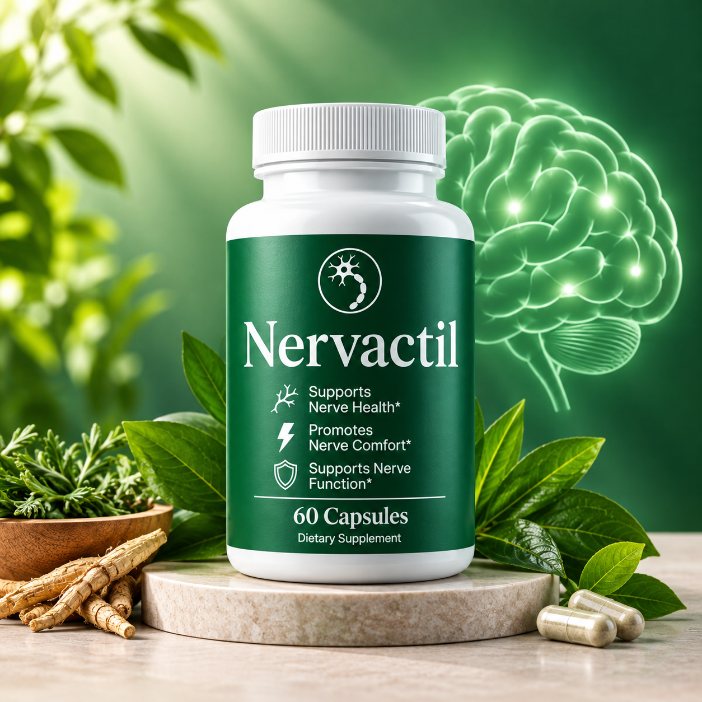

Ingredient names
Look for the complete list of active and other ingredients provided by the manufacturer or seller.
Ingredient transparency matters. This page explains what can and cannot be established from the supplied product imagery.

The exact current Nervactil formula should be confirmed using the official product label or official website. Ingredient names, quantities, and formulations can change, so visitors should review the current product information before relying on this information.
A useful Nervactil review should distinguish between what is visible in marketing imagery and what is documented on the current product label. Plants, roots, capsules, or other visual elements around a bottle may be decorative or conceptual and should not automatically be treated as ingredients.
Look for the complete list of active and other ingredients provided by the manufacturer or seller.
Check the amount per serving where the label provides it. Do not infer quantities from the product's imagery.
Use the current serving directions printed on the product rather than an assumed dosage from an article.
When an ingredient is verified, you can research its general nutritional or wellness role. But an ingredient's general properties do not automatically prove that the finished Nervactil product will deliver a particular result. Product-specific conclusions require product-specific evidence.
If you have questions about interactions, allergies, medications, pregnancy, nursing, or a health condition, consult an appropriately qualified healthcare professional before using a dietary supplement.
No. The images are not sufficient to establish the exact formula or quantities.
Use the current official Nervactil product label or official product information.
Not necessarily. Formulations can change, so current product information is preferable.
Before relying on an ingredient claim, confirm the formula and serving information on the official product source.